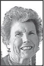

Schenectady, New York
McGillin, John "Jack" SCHENECTADY John "Jack" McGillin, 88, passed away peacefully at home on Monday, October 28, 2019. Born in Schenectady, Jack was a traffic manager for the General Electric Co. for many years before retiring. Jack was very proud of his Irish heritage and enjoyed listening to Irish music. He was an avid golfer who loved golfing with his buddies and greatly loved his time at Lake George. He spent time between his home in Florida and his place on Lake George. Jack's love for travel led him to many wonderful destinations such as Ireland, Italy and Mediterranean cruises just to name a few. He is survived by his wife of many years Mary Sterlina McGillin; a daughter Sharon Overton and her husband Jack; three grandchildren, Courtney Overton, Lindsey Overton-Orietas her husband Thalis and Jaime Overton; and a great-granddaughter Calia Reagan Orietas. He is also survived by his very special dog, Padraig, a golden retriever who never left his side until the day of his passing. Funeral service on Thursday at 11 a.m. in St. Paul the Apostle Church. There will be no calling hours. Interment in Most Holy Redeemer Cemetery, Niskayuna. Memorial contributions may be made to Community Hospice Foundation, 295 Valley View Blvd., Rensselaer, NY, 12144 or the Mohawk Hudson Humane Society, 3 Oakland Ave., Menands, NY, 12204. You may pay your condolences online at www.dalyfuneralhome.com

Agnes Saksen Crowley passed on Saturday October 26, 2019.
July 12, 1939 - October 26, 2019
Our thoughts and prayers are with the family.
Funeral arrangements:
10 am Wednesday November 6, 2019
Immaculate Conception Catholic Church
3780 S Hwy A1A
Melbourne Beach, FL 32951

Lucille Joy Petracca Hoffman
Lucille was born on July 20, 1947 and passed away on Sunday, October 27, 2019.
Lucille was a resident of Melbourne Beach, Florida at the time of passing.
Funeral and burial service will be at Cape Canaveral National Cemetery (5525 U.S. 1, Mims, FL 32754) on Friday, November 1st at 2:00pm (EST) with Pastor Ken Freedmann.
Memorial Donations may be sent to Orphan's Promise (CBN) .

Art Molin has passed away.
Details are not available at this time.

Rose Ann was born and raised in Magnolia, Delaware. She attended Caesar Rodney and the University of Delaware, where she graduated with a degree in early education. She taught second grade in the Dover school system for several years, but her greatest joy and major focus was her family.
Rose Ann is survived by her husband of 68 years, Ebe Stephen Townsend Jr., daughter Karen and her husband William Lowe, son Jeff and his wife Wanda Townsend, daughter Robin and her husband Philip Farinella. She was blessed with seven grandchildren, Amy, Jeffrey, Michelle, P.J., Lauren, Lindsay and Robert, three step grandchildren, William, David and Christopher, one great grandchild, Beckett and seven step great grandchildren, William, Daniel, Matthew, Emily, Christopher, Mia and Austin.
Rose Ann was predeceased by her parents, George and Amy Hughes Reed and her brother George.
In lieu of flowers the family requests donations be made to Delaware Hospice, 911 S DuPont Highway, Dover, DE 19901; Bayhealth Foundation, 640 S State Street, Dover, DE 19904; or Wyoming United Methodist Church, 216 Wyoming Mill Road, Dover, DE 19904.
Funeral service 12 pm Monday, August 19, 2019 at Pippin Funeral Home, 119 West Camden Wyoming Avenue, where friends may call beginning at 11 am. Interment to follow at Odd Fellows Cemetery, Camden, Delaware.

Former resident Jackie Bechir has died, our prayers & thoughts go out to her family.

Condolences can be sent to:
Sandra Cummings
214 Alps Road Unit 19
Branford, CT 06405
IN THE CARE OF

Former resident Terry Vourakis age 82, died June 12, 2019. Funeral was June 15, 2019, handled by Brownlie Maxwell.

Died June 6, 2019

Thomas "Ziggy" Scogna

MELBOURNE BEACH, FL - Thomas “Ziggy” Scogna, 76, of Melbourne Beach passed away on Friday November 23, 2018.He was a retired Contractor and member of the Immaculate Conception Catholic Church. He was proud of his Italian Heritage and treasured being with his family and cooking.
Survivors include his daughters Cheryl Scogna Skelly, Carrie Scogna and Stacey Wood; grandchildren Christopher, Justina and Sofia and several nieces and cousins.
A memorial Mass will be celebrated on Saturday
January 19th at 11am in the Immaculate Conception Catholic Church.
Donations in his memory may be made to Health First Hospice. www.brownliemaxwell . com

1931 - 2018 Notice Guest Book
HISLOP JAMES D. Sr. "Sonny" of Melbourne Beach, FL, formerly of Dorchester, MA. September 29, 1931 - October 13, 2018. Sonny was a retired Sergeant from the U.S. Marine Corps , a recipient of the Purple Heart & was a member of the Disabled American Veterans; having served in the Korean War . Sonny was also retired from the City of Boston.Brother of the late Joan Hamilton of FL, Mary Sommers, Theresa Rowel & Richard Hislop of Dorchester, MA. Beloved father of James D. Hislop of Hanover, Francis "Joey" Hislop & his wife Diane of Pembroke & Karen Bowen of Kingston. Proud grandfather to Joseph Bowen, Sean Bowen, Stefanie (Bowen) Govoni, Christopher Hislop, Jonathan Hislop, Jordan Hislop & Alexandria Hislop. Great grandfather to Brady Bowen, James Bowen, Vanessa Govoni, Owen & Oliver Hislop. Sonny leaves behind many nieces and nephews. Sonny enjoyed bicycling, playing pickleball & was an avid reader. Visiting hours will be Thursday from 4 to 8 PM at the Casper Funeral Home, 187 Dorchester St., SOUTH BOSTON, MA.Interment on Friday at 9:15 AM at the Massachusetts National Cemetery, Bourne, MA
In lieu of flowers, donations in Sonny's name can be made to the Wounded Warrior Project. For online guestbook www.CasperFuneralServices.com Published in Boston Herald on Oct. 17, 2018

Our thoughts & prayers are with Pat & Mary Lou on the death of their daughter Judy.

Obituary for Judy Petrozelli
July 19, 1963 - May 24, 2018
Judy Petrozelli, 54, long time resident of Rutherford passed away Thursday, May 24th, 2018. She was born in Jersey City to Patrick and Mary Lou (nee Ferone).
Judy was a High School graduate. She was a member of Helping Hands, Inc. She was very sweet and loving and deeply loved by her family.
She will be missed by her devoted father and mother, Patrick and Mary Lou Petrozelli, her siblings JoAnn Bledsoe & husband Steven, Linda Petrozelli & husband David Lentz, nieces and nephews Zoe, Phoebe Anna and Mia Bella, Faith, Joshua, Luciana.
Family will receive friends Friday from 10:00am to 11:30am in the Calhoun-Mania Funeral Home, 19 Lincoln Ave., Rutherford. followed by
Funeral 12pm Mass of Christian Liturgy in Our Lady of Mount Carmel Parish, Lyndhurst.
Entombment in Holy Cross Mausoleum, North Arlington
In lieu of flowers, a donation to Deborah Hospital Foundation @ deborahfoundation.org would be greatly appreciated.

Joseph Andrew Lederer
Age 92, of Wyckoff, N J, died on April 30, 2018
Our prayers & thoughts are with the Lederer family.

Karen W. Staudinger, 90 years, of Green Pond, NJ, formerly of Elmwood Park and Melbourne Beach, Fla., passed away on Tuesday, Feb. 27.
Born on Feb. 16, 1928 in Paterson, NJ, to the late Peter J. Wiarda (raised by Joseph Wiarda) and the late Mary (Peterson) Wiarda.
Karen married Joseph Staudinger in 1949 and resided and raised their family in Elmwood Park, spending their summers in Green Pond, where they moved permanently in 1984.
Karen was predeceased by her “Mr. Wonderful,” husband of 66 years, Joseph Staudinger in 2015 as well as her siblings Ruth Beckmann, and Peter and Martin Wiarda.
She attended The Berkeley School of Business and William Paterson University. For more than 25 years, Karen was an executive secretary for the Elmwood Park Department of Special Services until she retired.
She was active in many community groups including the East Paterson Fire Department Ladies Auxiliary, the Green Pond First Aid Squad and the Women's Chapel Club of Green Pond.
She enjoyed painting, stitching, and cooking, especially baking.
Karen made friends with ease and will best be remembered for her selfless and kind heart, infectious smile and welcoming arms.
Karen is survived by her five loving children: Linda Kay and her husband Warren of Tabernacle, NJ; Joanne Fantry and her husband George of Little Egg Harbor, NJ; Nancy Sliker and her husband Glenn of Mercerville, NJ; Kenneth Staudinger and his wife Christine of North Canton, OH; and Kristen Silvestri and her husband Mark of Newfoundland, NJ. A devoted grandmother of fourteen: Lindsay (Solensky), Thomas and Christopher Kay; Michael and Rebecca Fantry; Jessica, Jaime and Timothy Sliker; KellyAnn (Butterworth), Kenneth and Matthew Staudinger; and Steven, Sarah and Kyle Silvestri.
Karen was further blessed with eleven great-grandchildren: Andrew and Evan Solensky, Gemma Kay, Olivia and McKenna Kay, Ava and Mia Fantry, Shane and Madelyn Sliker, Bryce and most recently Jace Butterworth.
Services to celebrate her life were on March 4 from 2 p.m. to 6 p.m. at the Stickle-Soltesz Funeral Home, 187 La Rue Road, Newfoundland, NJ 07435.
The funeral mass was held on March 5 at 10 a.m. at St. Simon's Catholic Church, 1010 Green Pond Road, Green Pond, NJ 07435.
In lieu of flowers, donations can be made in Karen's memory to the Women's Chapel Club of Green Pond, PO Box 123, Newfoundland, NJ 07435; or to the Green Pond First Aid Squad, PO Box 251, Newfoundland, NJ 07435; or to Alzheimer's New Jersey, 425 Eagle Rock Avenue, #203, Roseland, NJ 07068 Attn: Development Dept.
Log onto www.sticklesolteszfuneralhome.com tribute wall to personally post your condolences, memories, photos, and videos

Robert Crowley
It is with with deep sadness that we let you know that Bob Crowley died on Monday February 5, 2018.
Our prayers & thoughts go out to Agnes and family.
Mass will be Saturday February 17, 2018 at Immaculate Conception, Melbourne Beach at 10:30 am.
Details to follow.

Maureen May Southcomb died on November 15, 2017
No services are scheduled.
Our prayers & thoughts go to her family.


Bruno Mallozzi died on September 4, 2017 at the age of 77.
Our prayers & thoughts go to his wife Monika & family

We were sad to hear of the death of our retired manager's wifr Christine. Our thoughts and prayers are with Matt and family.

.Christine Michelle Lighthill Tribute
Christine Michelle Lighthill
Christine Michelle Lighthill, 53, passed away on Monday, July 10, 2017 at Health First Hospital in Viera, FL, after a courageous battle against cancer. She was born on May 13, 1964 in Flint, MI, to James and Virginia Coggins.
Christine grew up in Otisville, MI, and graduated from Lakeville High School in 1982. After high school, she made Florida her home. She was successful throughout her career and always loved a challenge. Her last career move she found to be the most rewarding, working for the University of Florida Ped-I-Care Program. She loved to be able to make a difference in the children's lives.
She married Matthew Lighthill in 1993 in Melbourne, FL, and they celebrated 24 years of marriage this past June.
Christine was very active in her community and she touched many lives both directly and indirectly. She believed in giving back and did so in many ways, the largest being the annual “Battle of the Bridges” triathlon, which she owned, organized, and directed.
The funds raised helped many local organizations, including the Cancer Care Centers of Brevard Foundation. For her efforts, she received the 2013 Central Florida Humanitarian Award, and she served on the Board of Directors of the Cancer Care Centers of Brevard Foundation. She was devout in her faith and was a member of the Ascension Catholic Community Church. Christine was an avid triathlete and traveled the states looking for another challenge.
She enjoyed long walks at her favorite spots (the wetlands, the beach, and Mom and Dad's).
She also enjoyed a good book, spending time with family and friends, and her beloved dog Aniol.
Christine is survived by her spouse Matt of Melbourne, FL; her parents James and Virginia Coggins of Southern Pines, NC; in-laws Wayne and Virginia Sue Lighthill of Melbourne, FL; brothers Steven (Lynette) Coggins of Davison, MI, and Mark (Jaynie) Coggins of Otisville, MI; brothers-in-law Mark (Dorean) Lighthill of Dothan, AL, Darrell Lighthill of Lincolnton, NC, and Paul Lighthill of Melbourne, FL; and many nieces and nephews.
A memorial service will be held at Ascension Catholic Community Church at a later date.
In lieu of flowers, the family requests that memorial donations be made to Colorectal Cancer Research. Condolences may be left on the Brownlie & Maxwell online guest book at http:// www.brownliemaxwell.com .
The family wishes to thank Dr. Jeff and Danielle Greenspoon and family, Leigh Pettigrew, Karen Osiniak, Marta Fiol, and Mary and Harvey Sontag for their enduring love, friendship, and support.

Our prayers & thoughts are with the Phillips family.

Willis Gene Phillips
Willis Gene Phillips, born November 25, 1927 passed from this life on July 3, 2017 at William Child Hospice Home. He was surrounded by family and loved ones. Born to Willis H Phillips and Bertha Mae Phillips in Detroit, Michigan, he was the eldest of 3 brothers, Carlton Clyde (Vera) and Ronald Keith (Ginger) who preceded him in death. 'Gene' was married to Mary Ramona Burton on April 3, 1945 until she passed away in 1986. Gene is survived by daughter Vicki Lynn (Murray Woolf) and son Clifford Lee (Carol Greims). Gene married Jeanne Robbins in December 1991. Jeanne preceded him in death after 26 years of marriage in 2016. Gene is also survived by Jeanne's sons Robbin Roddewig (Jennifer Payton) and Bob Roddewig (Michelle Clery).Together Gene and Jeanne have 8 grandchildren and 11 great grandchildren.
Gene served in the Occupational Forces in Japan during the years of 1945-47. Over the years Gene has held several patents as well as has owned and operated several companies. A favorite hobby was flying his small aircraft. Most recently Gene and Jeanne retired to the Beachwoods Community in Melbourne Beach Florida where they were both active and beloved members of the community.
Memorial Services with Military Honors will be held at 9 am at St Marks United Methodist Church in Indialantic Florida.

Our prayers & thoughts are with the Horn family.
Francis R. “Frank” Horn
Francis (Frank) R.
Horn died peacefully at home on July 2, 2017.
He was born on January 30, 1925 in Erie, PA.
He was the son of the late Frank Joseph Horn Jr. and Catherine Barbara (Kupper) Horn. He attended Sacred Heart Grade School and graduated from Academy High School Class of 1943. He voluntarily enlisted in the U.S.Navy and was sworn in the day after High School graduation. Frank entered active service as a V-12 student at Purdue University and later at DePauw University. He was commissioned as an Ensign at Northwestern University Midshipman School in July 1945.
Years later, he graduated from the University of Maryland. Frank's sea going duties were served in various Mine Sweeper Class ships in the Pacific Ocean and at the Naval Mine Warfare School at Yorktown, VA. He entered into the Atlantic Fleet Destroyer Forces and served in various destroyers and staffs working his way as Division Offi cers, Chief Staff Officer on Destroyer Squadron 14, Executive Officer of USS Purdy DD 734 and ultimately Commanding Officer of USS Douglas H. Fox DD779. Prior to his destroyer command he was the Commanding Officer of USS Outpost, AGR 10 a radar picket ship serving as the seaward arm of NORAD in the North Atlantic.
Frank's shore duties included student/instructor at Service Schools that included Navy Postgraduate School Monterey, CA; Naval Communications Command, Defense Communications Agency, and Navy Department.
His ashore specialty was satellite communications. He retired from the Navy in 1969, and he with his family moved to Indialantic, FL and later settled in Beach Woods Development, Melbourne Beach, FL. He became a Real Estate Appraiser in 1974.
Frank was a charter member of Immaculate Conception Parish Melbourne Beach and served as Eucharistic Minister, a Member on the Guidance Council and chaired the building and grounds committee. He was also a Past President at Beach Woods. Frank was married to the late Kathleen Anne Sullivan of Newport RI. He is survived by his daughter Patricia Anne Horn of Lake Mary, FL; sons: Peter F.(Charlotte) Horn of Wesley Chapel, FL; Michael J.(Anna) Horn and Gregory J.(Carol) Horn, both of Palm Bay FL; Timothy G. (Joanne) Horn of Rock Hill, SC; and Andrew S.(Angela) Horn of Indialantic, FL and five grandchildren: Rachelle, Matthew, Emily, Samuel and Zoe and a brother Charles E. Horn of Erie, PA. Funeral Mass will be celebrated Friday, July 21, 2017, at 11 AM at Immaculate Conception Church, Melbourne Beach, FL. Interment will take place at the National Cemetery, Bushnell, FL at a later date. Memorials may be made to the St.
Jude Children's Research Hospital, Memphis, TN.

Our prayers & thoughts are with Inka and family.
Jerry D Neiswanger
July 01, 1934 - July 01, 2017
Retired Lt. Colonel Jerry D. Neiswanger passed away on July 1, 2017 with his family at his side.
Jerry was born on July 1, 1934 to Albert and Ruth Neiswanger in Odon, Indiana. He fought couragously for our country in the Korean War and retired from the Navy in 1980.
He is survived by his wife of 57 years, Inka Neiswanger; daughter, Gwen Kline; son, Rod Neiswanger; granddaughter, Lindsey Kline and grandson, Austin Kline.
Funeral Information
A private burial is planned at Cape Canaveral National Cemetery at a later date

Our friend and neighbor Herman Small died on April 10, 2017.
Our thoughts and prayers go out to his wife Joan and family.
Small, Herman age 90, of Melbourne Beach, April 10, 2017, Ammen Family Cremation and Funeral Care

Our friend and neighbor Damiano ( Dom ) Prudente, 93, passed away on March 3, 2017.
Our thoughts and prayers go out to his wife, Jean and family.

It is with great sadness that we announce the death of Jim McGrath on Monday January 16, 2017.
Our thoughts and prayers are with Bea and their family.
SERVICES WILL BE ON FRIDAY FEBRUARY 10, 2017 AT 11 am AT IMMACULATE CONCEPTION CHURCH, MELBOURNE BEACH

James McGrath
Melbourne Beach, FL
James Joseph McGrath of Melbourne Beach, FL, and Brick, NJ, a retired insurance executive and US Navy veteran who never lost his love of the sea and of travel, died Jan. 16. He was 88. Mr. McGrath left his studies at Seton Hall Preparatory School the day after he turned 17 to enlist in the Navy in the final months of World War 2 . He served as a medical corpsman until 1952. He returned to Seton Hall and received his diploma, going on to attend Seton Hall University at night. Mr. McGrath began his career in insurance as a claims adjuster for Public Service Coordinated Transport in Newark and, for 40 years, he worked with Certified Claims Corporation Co., Edison, retiring as vice president. Born in Newark, Mr. McGrath lived in Fords and Spring Lake before moving to Brick. He lived seasonally in Melbourne Beach for 30 years. He is survived by his wife, the former Beatrice Zontanas. They would have celebrated their 66th wedding anniversary in March. He also is survived by three sons, James (Kathleen) of Edison, NJ, Steven (Wendy) of Colonia, NJ, and Michael (Lori) of Barnegat, NJ; a daughter, Karen Rawley (Andy) of West Orange, NJ; ten grandchildren and five great-grandchildren. He was predeceased by his parents, James and Elizabeth McGill McGrath; two brothers, Frank and William, and a sister, Colleen Walsh He was a vice president of The Friendly Sons of the Shillelagh in West Orange in 1969. Mr. McGrath was an avid fisherman who loved family vacations that included leaving the land behind for deep sea fishing with his sons. He and his family also traveled to Europe, the Caribbean, Mexico and Ireland. "He knew so much about so many things," said his daughter Karen Rawley. "My father always gave us good advice. He was very patient with us." Rawley said her father also loved to tell stories about his childhood, his parents, and growing up in Newark. His family members gathered from throughout the country to be with him when he passed away in Melbourne Beach, Fl. A funeral Mass will be celebrated Friday, February 10, 2017, at 11:00 AM at Immaculate Conception Catholic Church, Melbourne Beach, FL.
A funeral Mass will be celebrated Saturday, May 6, 2017 at 10:30 am at St. Catherine Catholic Church, Spring Lake, New Jersey.
browniemaxwell.com Published in FLORIDA TODAY on Feb. 5, 2017 -

Our thoughts and prayers are with Ellie Horner on the death of her son John.
|
|
|||
| Cemetery Service: Saturday, November 19, 2016 Details |
Amherst, MA John Allen Carroll of Frederick, MD passed away November 9, 2016. Born in Cortland, NY on April 5, 1969 to the late John J. Carroll and Eleanor Allen Horner, John attended Amherst (MA) Public Schools and High Point University. He was employed by Greenbriar Veterinary Hospital and Pet Resort. In addition to his mother, John is survived by his sister, Elizabeth, his brother-in-law, nieces, and many aunts, uncles and cousins. Calling hours will be Saturday November 19, 2016 from 10:00 AM – 12:00PM at the Douglass Funeral Service, Amherst. Burial will follow in St. Brigid's Cemetery, Hadley. Memorial contributions may be made to: Homeward Trails Animal Rescue, P.O. Box 100968, Arlington, VA 22210 ( homewardtrails.org ).

Jeanne Robbins Phillips died on Monday September 12, 2016.
Our prayers and thoughts are with Gene and their family.

Jeanne Robbins Phillips
Melbourne Beach
Mrs. Jeanne Robbins Phillips, of Melbourne Beach FL, passed away on Tuesday, September 12, 2016 at the age of 87. Jeanne was born to parents Mina and Mervin Robbins on February 10, 1929 in Iowa and attended Iowa State. She grew up as the eldest sister with her brother Richard. Jeanne is survived by her husband Gene Phillips, step daughter, Vicki (Murray) Wolfe; her sons Robert (Michelle) and Robbin (Jennifer) Roddewig; her step son Cliff (Carol) Phillips and eight grandchildren.
A memorial service will take place on Saturday September 17, 2016 at 1:00pm at St. Marks Methodist church in Indialantic FL. Internment will take place at a later date in Michigan.
A reception will follow at the church.
St Mark's United Methodist Church
2030 N. HWY A1A
Indialantic, Fl 32903

Gloria A. Lohner - April 7, 1935 - July 16, 2016
Full Name: |
Gloria A. Lohner |
Date of Birth: |
April 07, 1935 |
Date of Death: |
July 16, 2016 |
Country of Birth: |
United States |
Place of Birth: |
Maspeth, Queens, New York |
Place of Death: |
Indian Harbor Beach, Florida |
Memberships: |
Gloria was a communicant of Holy Innocents Church in Pleasantville, NY |
Biography: |
Gloria A. Lohner - April 7, 1935 - July 16, 2016Gloria A. Lohner, a devout Catholic, passed away on Saturday, July 16. Daughter of John and Ann (McKiernan) Eberlein, Gloria was born in New York City in 1935. She attended Bishop McDonald High School, an honor awarded to two girls from each Catholic parish in her diocese. Following high school, Gloria attended New York University where she earned her Bachelor's Degree. In 1958, she met her future husband, Paul E. Lohner, on a blind date. After a whirlwind romance, they married and moved to Point Pleasant, New Jersey, where Gloria taught first grade, and Paul became the first Recreation Director in Brick Township, New Jersey. After the birth of their two daughters, Eileen and Linda, they moved to Pleasantville, New York in 1965. David, their son, was born shortly thereafter. Gloria was a beloved and highly regarded substitute teacher in Pleasantville and became involved in many social activities including Newcomers, PTA, Pleasantville International Association, Gourmet Club, Candlewood Yacht Club, etc. She was a dedicated parishioner of Holy Innocents Church and instilled in her children the importance of God and family. Gloria had a successful career in real estate both in Pleasantville, New York and in Melbourne Beach, Florida, where she and Paul moved shortly after his retirement. In 1994, after fighting a courageous battle with cancer, Paul passed away. Gloria remarried Steve Wakely, a former NASA Engineer. They spent five years together before Steve passed away in 1999. Gloria was a communicant of Immaculate Conception Church in Melbourne Beach, Florida. She enjoyed living in Florida and looked forward to visits from family and friends. She loved Beach Woods in Melbourne Beach and was adored by family and friends. Gloria's great smile and outgoing enthusiastic personality will be sorely missed by those who knew her. Her compassion and empathy was readily apparent, and she was a positive role model for those whose lives she touched. Gloria is survived by her companion John Dougherty; her sister Joan Lederer and family, her brother Leonard Eberlein and family; her daughter Eileen Lohner-Turk, Stevan Turk and grandson Ryan Turk of Carlsbad, California, her daughter Linda Lohner- Mezzullo, Mark Mezzullo and grandson Will Mezzullo of Westport, Connecticut, and her son David Lohner and his significant other Paula Oleson, of Moab, Utah. A service will be held at Holy Innocents Church in Pleasantville, NY on Sunday, October 9th at 11:00 a.m. Reception to follow. Contact Eileen at Leenie16@juno.com for more information. Donations can be made to the Alzheimer's Foundation or Hospice of St. Francis www.hospiceofstfrancis.com.
|

September 13, 1939 - July 31, 2016
Camille Dolores Armstrong, 76, passed away Sunday, July 31, 2016.
Camille was born in Sudbury, Ontario, Canada on September 13, 1939 to the late Oscar and Liliane Martel.
She was a member of the Melbourne Beach Garden Club and a volunteer for Meals on Wheels. She enjoyed her friends and neighbors at her Beach Woods community.
Her family includes her husband of 28 years, Kent Armstrong; son Michael Masseau; brother Reggie Martel; brothers and sisters in law Ronald & Evie Martel and Robert & Patricia Martel; sisters Patricia Goodwin and Marilyn Johnson; stepchildren Susan Backiel, Kevin Armstrong, Lynn Armstrong, Melissa Kania & Holly McCracken; 12 grandchildren; several great grandchildren and many nieces and nephews.
A memorial service will be held on Wednesday, August 3, 2016 at 10:00 am at Ammen Family Cremation and Funeral Care, 1001 South Hickory Street, Melbourne.
Service: Map to Ammen Family Cremation & Funeral Care, Melbourne
View Tribute and Sign Guestbook

Our prayers and thoughts are with Jane's family
Dr. Jane Brady Matanzo
Melbourne Beach
Dr. Jane Brady Matanzo of Melbourne Beach, born May 9, 1940 in La-Porte IN, died suddenly at home June 9, 2016.
A retired educator, she taught at Florida Atlantic University; Hood College, American University, and Millersville University. She earned her B.S. from Ball State, M.A. from Ohio State, and Ph.D. from University of Maryland.
She received many awards in her life: Distinguished Teacher of the Year; Governor's Award for Education in Maryland; Phi Kappa Phi; Who's Who; and Outstanding Young Women of America. A leader in the field of Education, she published four books and countless articles.
After retirement, she volunteered as docent at Funk Ctr for Textile Arts, and on the Board of the Friends of Melbourne Beach Library.
She is survived by Frank, her husband of 48 years; daughter Megan (David) of Sacramento, CA; sister Joan (Lowell) of Dayton, OH; sister in-law Anita and niece Tawny of St. Pete, FL; and nephew Jon (Stephanie) of Durham, NC. She also leaves behind many close friends in Beach Woods and Melbourne area.
A reception will be held on Saturday, June 25th, 11:00a at Melbourne Beach Library, 324 Ocean Drive, Melbourne Beach.
In lieu of flowers, donations in her name can be made to the Melbourne Beach Library (321-9565642) or Funk Ctr for Textile Arts (321-674-8313).

Ammen Family Cermation & Funeral Care is handling arrangements.

Our prayers and thoughts are with Doris's family.
Doris H. Brenner
Doris H. Brenner a past resident died on Sunday April 10, 2016 at the age of 92.
Strunkfuneralhome.com

Our prayers and thoughts are with Helen's family.
Helen P. Lynch
Melbourne Beach, FL

Helen P. Lynch 90, passed away on April 10, 2016. Helen was born in Jersey City, NJ and was a controller for Crown Controls Inc. in New Jersey before retiring in 1990. She was an avid bridge player. Helen is survived by her daughters, Patricia Stellakis, Eileen Esposito and Mary Ann Lynch; son, William Edward Lynch; grandchildren; Janeen McAvoy, Timothy Thein, Michelle Baer, Cheryl Motty, Nicole Dooley, Erin Kaminski, William Lynch, David Lynch and Kelly Esposito, 16 great-grandchildren; sister, Aline Sarapuchiello. Helen is predeceased by her husband William E.
Lynch, daughter, Virginia Thein, sister, Patricia O'Rourke and brother James Peterson. Visitation will be Wednesday, April 13 from 5pm until 7pm at Brownlie-Maxwell Chapel. Service Thursday, April 14 at 1:30pm at Immaculate Conception Catholic Church.

James O'Toole
It is with deep sadnesss that we announce that long time resident and friend Jim O'Toole died this morning, March 9, 2016. Our thoughts and prayers are with Mary Kay and family.
James J O'Toole 75, of Melbourne Beach, Fl. Formerly of Greenfield Pa. passed away March 9th, 2016.
Survived by his dedicated and loving wife of 30 years Mary Kay Davis stepsons Jim and Chris Davis and seven grandchildren. Son of the late Tom and Ann O'Toole, who were originally from Ireland. He is also survived and adored by his sister Mary Kay Gorman [Gene] brother-in-law of Mckeesport, Pa. Cherished by three nieces and nephew.
He graduated from St Rosalia, Central Catholic High School and Duquesne University with a fine Catholic Education.
Jim was employed by TWA as a sales rep out of college and later was in food, Rolling Rock Beer and insurance sales.
Jim loved sports. He played and coached football, baseball and basketball. He coached CYO basketball and went to win the State Championship. He also started the little league football team in his hometown. Took up the game of golf and loved it, he became a avid golfer and put all the other toys away.
He loved most his wife, but golf was a close second. He enjoyed taking trips and cruises. He was a grand person, a diamond in the ruff and will be truly missed. He was a Member of Immaculate Conception Catholic Parish where a mass will be held @ 10:30 Saturday, March 19, 2016 with a reception to follow at the parish hall. In lieu of flowers : Donations may be made to the Father Joseph A. Nolan Education Fund, Immaculate Conception Church 3780S HWY A1A Melbourne Bch. Fl, 32951
Please also check the bulletin board for details.

It is with deep sadness that we announce that long time resident and friend Clyde L. Hose has passed away. Our thoughts and prayers are with Patricia and family.
 In Memory of
In Memory of

It is with deep sadness that announce the death of Donna McKenna on January 22, 2016. Our prayers and thoughts are with her family.
McKenna, Donna A. age 48, of Melbourne Beach, Friday, January 22, 2016, Ammen Family Cremation and Funeral Care, Melbourne
Women's Guild member Donna "Sissy" McKenna (daughter of member Donna Van Patten)
passed away on Friday, January 22, 2016. A memorial mass will be held at Immaculate Conception Church Saturday, February 6, at 11 AM with a reception to follow. In lieu of flowers, a donation may be made in Donna McKenna's name to: Immaculate Conception Church Women's Guild 3780 South Highway A1A Melbourne Beach, FL 32951 or American Cancer Society 4450 West Eau Gallie Blvd Suite 280 Melbourne, FL 32934

It is with deep sadness that we announce the death of long time resident William Boyd Marvin. Our thoughts and prayers are with his family.
William Boyd Marvin
Lee County
William Boyd Marvin died on Wednesday, Dec. 23, 2015 in Lee County, Florida. He was born in Patton, PA. to the late Grace and William Dell Marvin on Sept. 21, 1917. He is survived by his son, Howard and daughter-in-law, Judy Marvin of Lakeport, FL, a grandson, Wayne Marvin, granddaughter-in-law, Soumaya Marvin, and their twin great grandchildren, Zachary and Hannah of Orlando, FL, great granddaughter, Alexandra Marvin of Lakeland, FL, and a sister, Mary Shaffer of Huntsville, Alabama. He enlisted in the US Army at the beginning of WW II, and was assigned to the Engineer Division. After training he was shipped to England in 1942 where he was made Captain of his group and assigned to the construction of airstrips, roads and bridges. On his return from the military, he went to work for Ohio Edison in Akron, Ohio where, after 42 years, he retired and moved to Melbourne Beach, Florida. Mr. Marvin loved traveling, exercise, riding a bicycle, walking, and reading. He taught water aerobics in Beach Woods for nearly 18 years.

It is with deep sadness that our friend Joel Gilbert has passed away. Our thoughts and prayers are with Maureen and family.
Joel Paul Gilbert
Melbourne beach, FL
Joel Paul Gilbert Sr., “The Nicest Man in the World” We are very sad to announce the passing of Joel Paul Gilbert Sr. on December 2, 2015 at age 77. He died peacefully at home.
Joel was born in Miami on July 18th, 1938. He graduated Miami High in 1956, University of Miami in 1961 and married Maureen Scanlon in 1961. He and Maureen moved to Georgia in 1966, moving to London, England, and then to Merstham, near Reigate, Surrey, England in1976. Joeland Maureen retired to Beach Woods, Melbourne Beach, Florida in 1993 where they have lived ever since.
Joel is survived by his beloved wife of 54 years, Maureen; his two sons, Joel Jr., and John and husband, Gavin; Family-of-Choice Patricia Maugeri and Dallas Goodman, and Nicole and Brian Ladd, and Chris Kastrenakes; lifelong friend Richard Imperiale and partner, Linda Naughton; cousins Joey Teague, and Dorie Stein and spouse, Marjorie Abrams; the Newsome, Lord and Porter families of Georgia; and countless, wonderful friends and neighbors.
A memorial service will be held at Brownlie-Maxwell Funeral Home, 1010 Palmetto Avenue (US1), Melbourne, Florida 32901, on Saturday 12th December at 3 pm. Joel requested no flowers, but donations for The Salvation Army or Molly Mutts of Melbourne, Florida.

It is with deep sadness that we announce that our friend Jane Loufek has passed away. Our thoughts and prayers are with Jim and family.
Jane Loufek
Melbourne Beach
Jane Loufek, 78, of Melbourne Beach, passed away on Dec. 4, 2015.
She married Jim Loufek and they raised their family in Pittsburgh and spent many happy years in Asheville. Jane retired from teaching in 2002.
The Loufek's relocated to Melbourne Beach.
Jane is survived by her husband of 54 years, Jim Loufek, her children Lynne, Jim, Steve (Michelle); Susan (Thomas); grandchildren (Michael, Miranda, Heather, Nicole, Joshua, Jacob, Tommy, Carolina and Fillmore); siblings Sue (Bill); Peter (Debbie); Chuck (Barb) and Mary; and remarkable nieces and nephews. Jane was preceded in death by her son Mike.
Jane was active in golfing, swimming, playing bridge, and singing in choir. We know that she is in the presence of the Lord and would have wanted us to rejoice in that.
A memorial service will be held at Immaculate Conception in Melbourne Beach, Florida on Saturday, December 12 at 11:00 am. In lieu of flowers, donations can be made to support Meals On Wheels; an organization where Jane enjoyed volunteering for many years.

It with deep sadness that we announce that our friend Pepe has passed away. Our prayers and thoughts are with Janet andd family.
Pepe Gallardo
5/22/1949 to 11/24/2015
Survived by wife of 45 years, Janet, two sons, P. J. and Kevin, and two grandsons, Shane and David.
Services will be held at Beach Funeral Home, 1689 S. Patrick Dr. Indian Harbour Beach, Fl 32937, beachfuneralhomes.com on December 2, 2015.
In lieu of flowers, memorial donations may be made to www.hospiceofstfrancis.com

Donald K. Kiersey
Former resident Donald K. Kiersey, age 96 died on September 19, 2015. He was predeceased by his beloved wife of
63 years, Raymonde Kiersey, November 21, 2008.
Arrangements by Ammen Family Cremation & Funeral Care, Melbourne, Florida.


Joseph Staudinger
October 29, 1927 – August 24, 2015 (87 years old)
Joseph passed peacefully in the loving company of his wife, Karen.
He attended Lodi HS in the 1940's where he excelled in football, basketball, and baseball. In baseball, he earned All-County and All-State honors and was invited to try out for the Brooklyn Dodgers. It was in high school that he met his future wife, Karen Wiarda. Joe went on to attend Muhlenberg College where his outstanding athletic successes continued. At Muhlenberg, he played forward on the League Championship basketball team and was honored to have played in the National Invitational Tournament in Madison Square Garden – the commemorative photograph remained proudly displayed on his wall. He was also inducted into the Athletic Hall of Fame at both Elmwood Park and Muhlenberg. He became an avid golfer and enjoyed sharing his love of athletics with his children and grandchildren.
Joe's college years were interrupted by the draft. He served in the Navy from May 1946 through April 1947 on the USS Thomas Fraser during World War II and earned a victory medal and honorable discharge. As a bonus, his Naval service included playing football for the Bainbridge Naval Training Center team.
On May 8, 1949 he married, and after a brief residence in Dearborn, Michigan Joseph and Karen raised their five children in Elmwood Park with summers spent in Green Pond. After retiring from Federal Paper Board, Green Pond became their permanent residence with winters spent in Melbourne Beach, Florida.
An active member of his community, Joseph was a member of the Elmwood Park Board of Education and the Green Pond Corporation Board of Directors.
He is survived by his beloved wife of 66 years, Karen Staudinger and five children: Linda Kay, Tabernacle, and her husband Bud; Joanne Fantry, West Milford, and her husband George; Nancy Sliker, Hamilton, and her husband Glenn; Kenneth Staudinger, North Canton, Ohio and his wife Christine; Kristen Silvestri, Newfoundland, and her husband Mark.
14 grandchildren: Lindsay Kay Solensky, Thomas and Christopher Kay; Michael and Rebecca Fantry; Jessica, Jaime, and Timothy Sliker; KellyAnn Staudinger Butterworth, Kenneth and Matthew Staudinger; Steven, Sarah, and Kyle Silvestri; and 7.5 great grandchildren: Ava, Mia, Andrew, Olivia, McKenna, Shane, Madelyn, and baby Butterworth.
He truly was Karen's “Mr. Wonderful” and showed his love and admiration for his grandchildren by making each of them feel like they were his favorite. He always reminded them to stay focused on their goals: “keep your eye on the donut, not on the hole” and “you can't soar like an eagle if you're surrounded by turkeys”.
A Memorial Service will be held at the Green Pond Chapel, Notch Road, Green Pond, Newfoundland, NJ at 3:00 PM, Saturday, August 29th.
In lieu of flowers donations in Joseph's honor can be made to the Green Pond Environmental Foundation, PO Box 648, Newfoundland, NJ 07435 or the Green Pond First Aid Squad, PO Box 251, Newfoundland, NJ 07435.

Larry Berger
It is with deep sadness that we announce that our friend Larry Berger passed away. Our thoughts and prayers are with Hildi & family.
Lawrence Berger
Melbourne Beach
Lawrence (Larry) Berger of Melbourne Beach, FL, passed away on June 10, 2015, he was born and raised in Rutland, Vermont on October 29, 1930.
His beloved wife of 43 years, Hildia. Berger was by his side to the very end surrounded by his children and family.
He was active in several community organizations in the Rutland area and in his community of Beach Woods in Melbourne Beach, FL.
Larry graduated from the University of Vermont in 1952 with a degree in business administration. He served in the Korean War, during and after the war in the Army.
After that he became co-owner of Rosen & Berger auto parts & salvage business for 26 years, retiring in 1980.
He was the son of the late Louis & Katie Rosen Berger. He was predeceased by his parents, his sister, Helen Ginsburg and his brother, Marvin Berger and 2 nephews, Peter and Harold Berger.
He is survived by his beloved wife, Hildi Berger, 5 children; Katie Saunders Berger; Michael and his wife Christine; William and his wife Isabella; Jeffrey and his wife Judy; Lisa Mumford Berger and her husband James Mumford; and by 10 loving grandchildren, a great-granddaughter and several nieces and nephews.
After his retirement - at age 50 he and his wife, Hildi, moved to Melbourne Beach, Florida in 1985.
There will be no services. Interment will be in Rutland, Vermont at a future date. In lieu of flowers, donations may be made to the Cancer Research Foundations, or to the Hospice Associations of Florida or Vermont, or any charity of your choice.

Maura Langan
It is with deep sadness that we announce that our friend Maura Langan passed away on 5/27/2015.
Maura Langan
Notice | Condolences

LANGAN - Maura (nee Hillick) of Queens Village on May 27, 2015. Beloved wife of the late William. Devoted mother of Kathleen (Patrick), Eileen (Chris) and Billy (Anne). Cherished grandmother of Connor, Christopher, Brandon, Liam, Briana, Colette, Kaeley and Elizabeth. Maura was the fourth youngest of 17 children of the late Catherine and Patrick Hillick, survived by her loving brother Brian and sister Kathleen of Belfast, N. Ireland. The family will receive friends Friday 2-5 & 7-9:00 pm at Thomas F. Dalton Funeral Home, 125 Hillside Avenue, New Hyde Park, NY. Mass of Christian Burial on Saturday 9:45 am at St. Gregory the Great Church, Bellerose, NY. Interment St. Charles Cemetery.
Published in Newsday on May 28, 2015
- See more at: http://www.legacy.com/obituaries/newsday/obituary.aspx?n=Maura-Langan&pid=174953955#sthash.rUpKWFoC.dpuf

Our friend Evelyn Engelken passed away yesterday, May 19,2015....
 Evelyn Engelken passed away suddenly Tuesday, May 19. She is a long-time resident of Beach Woods and member of New Neighbors Club of South Beaches.
Evelyn Engelken passed away suddenly Tuesday, May 19. She is a long-time resident of Beach Woods and member of New Neighbors Club of South Beaches.
A viewing will be held on Saturday, May 23, at 10 AM followed by a service and internment at the Fountainhead Funeral Home located at 7359 Babcock Street, Palm Bay. Phone number is 321-727-3997
May she rest in peace.
This Guest Book has been kept online until 6/18/2016 by Fountainhead Funeral Home.

Aida Rizzo
Our friend Aida has passed away. She was a past resident. Our prayers and thoughts are with her family.
In Memory of

March 14, 1928 - May 14, 2015
Obituary
Rizzo, Aida Marie, 87, went to be with the Lord May 14, 2015. Aida loved cooking, traveling, reading, teaching and playing mahjong, and spending time with her close friends. Preceded in death by her husband Thomas, Aida is survived by her loving children Thomas and his wife April and Lisa Robbins and her husband Rick and her 4 grandchildren Mia, Cole, Christopher and Amanda. Visitation will be held Friday May 22nd 4-6pm with a prayer service Saturday May 23rd 11am with entombment following at Hillsboro Memorial Funeral Home and Gardens, 2323 W. Brandon Blvd., Brandon. Donations may be made in Aida's name to St. Anne's Catholic Church, 106 11th Ave NE, Ruskin, FL 33570 or Life Path Hospice, 3725 Upper Creek Dr, Ruskin, FL.
Visitation
Friday, May 22, 2015
4:00 pm - 6:00 pm
Hillsboro Memorial Funeral Home
2323 W. Brandon Blvd
Brandon, Fl 33511

Rita A. (Prebis) Caffrey
Rita A. (Prebis) Caffrey, 87, passed away on May 13, 2015 at Center for Hope Hospice in Scotch Plains. Relatives and friends are kindly invited to attend the funeral on Monday May 18, 2015 from the Werson Funeral Home, 635 North Wood Avenue in Linden at 9:15 am. A funeral mass will be held at St. Joseph the Carpenter R.C. Church in Roselle at 10 am. Interment will be at St. Gertrude Cemetery in Colonia. Visiting hours will be held on Sunday from 2-6 pm. To leave online condolences please visit www.wersonfuneralhome.com. Rita was born in Elizabeth, NJ, lived in Melbourne Beach Florida the past 27 years, prior Linden. She was employed by Merck & Company in Rahway for 30 years as a secretary retiring in 1985. She enjoyed knitting, crocheting for a chemo therapy unit in Florida. She was a communicant of Immaculate Conception R.C. Church in Melbourne Beach Florida and was a fund raiser. She was an active participant of Assention Catholic Church Bereavement group. Rita was predeceased by her beloved husband Gerald J. Caffrey, Sr. (2009). She is survived by her loving children, Gerald J. Caffrey, Jr., Nancy Dziedzic and her husband John; her cherished grandchildren, Melissa, Alicia, Brett, John and Kyle; one great grandchild, Brynn. In lieu of flowers donations to Ronald McDonald House, 145 Somerset St., New Brunswick NJ in her memory would be appreciated.
|

Anna Licameli
Anna Licameli died on May 3, 2015, the mother of Louisa Licameli & sister of Mary Lou Petrozelli Beach Wood owners.
Our thoughts and prayers are with the Licameli & Petrozelli families.
Anna Ferone Licameli 'Lived a life of devotion to her family' Anna (Ferone) Licameli, 89, of Belleville, N.J., passed away on Sunday, May 3, 2015. Funeral is from the S.W. Brown & Son Funeral Home, 267 Centre St., Nutley, N.J., www.swbrownandson.com , at 9 a.m. on Wednesday, May 6. A Funeral Mass will be celebrated at 10:30 a.m. at Our Lady of Mount Carmel Church, Lyndhurst, N.J., followed by burial at Holy Cross Cemetery, North Arlington, N.J. Visiting will be at the funeral home on Tuesday, May 5, from 4 to 8 p.m. Born and raised in Jersey City, N.J., Anna came to Belleville 54 years ago. She was a secretary with the Mouli Manufacturing Company in Belleville before retiring, and was previously employed with Tri-Chem Corporation, also in Belleville. During World War II, Anna served with the civilian branch of the U.S. Army Quartermaster Unit and was also a former member of the Women's Club of Belleville. She is survived by her beloved husband, Michael W. Licameli; her children, Patricia Iannuzzi and husband Ray, Louisa Licameli, Anne Michele Hunton and husband Andy, Michael Licameli and wife Lesslie; her grandchildren, Juliane O'Brien, Christopher Iannuzzi, Tricia Ann Pizzi, Michele Ann, Matthew, Michael and Melissa Ann Hunton, Michael Francis and Nicholas Licameli; and nine great- grandchildren. Anna was the dear sister of Mary Lou Petrozelli and Louisa Abeal, and sister-in-law of Lillian Ferone. She was predeceased by her brother, John Ferone, and her sisters, Theresa Melleno and Carmela Mele.
S.W. Brown & Son Funeral Home, Inc.
267 Centre Street Nutley, NJ 07110
(973) 667-0875
Published in Star-Ledger on May 4, 2015

George Polster
It is with deep sadness that we announce that our dear friend, neighbor and former Board George Polster passed away on March 11, 2015. Our thoughts and prayers are with Toni and their family.
A Memorial Mass will take place at Immaculate Conception Church, A1A, Melbourne Beach on Saturday March 28th,
at 10am, you are invited to a reception at the Parish Hall following the interment.

Amesbury,
Curtis V. Sr.
Chili: Monday, March 9, 2015 in Melbourne Beach, FL at age 85. Survived by his loving wife of 62 years, Gertrude (Lynch); children, Curtis V. Jr. (Debbie), Mary Ann (Glenn) Kuntz, Bernie Best and Cathy Neff; 13 grandchildren; 11 great-grandchildren; and sister, Ann dePorres SSJ. Curtis was an Army Veteran of the Korean War Era, a retiree of Kodak after 39 years, a founding member of St. Pius Tenth Church and member of the Seasoned People. He was a volunteer for many activities such as Catholic Charities, Hope Hall and Aching Arms.
Friends may call at the Leo M. Bean and Sons Funeral Home, Friday 4-7 PM. Funeral Mass, Saturday 10 AM at St. Pius Tenth Church (gymnasium), 3000 Chili Ave. Interment, St. Pius Cemetery. In lieu of flowers, donations may be made to St. Pius Tenth Building Fund.


Leo M. Bean and Sons Funeral Home
2771 Chili Avenue Rochester, NY 14624
585-426-7830
Published in Rochester Democrat And Chronicle on Mar. 15, 2015

James H. Robertson
It is with deep sadness that we announce that our dear friend and neighbor Jim Robertson passed away on July 13, 2014. Our thoughts and prayers are with Ann and his family.
 James H. Robertson
James H. Robertson
Melbourne Beach, FL
James H. Robertson, 75, of Melbourne Beach, died Sunday, July 13, 2014 in Kananaskis, Canada.
Born in Southbridge, MA, he was a retired Math teacher and Track Coach instructor. James was the chairman of the Pairings committee for the Melbourne Beach Golf League, Chairman of the Architectural Control Committee and active on several other committees at Beach Woods.
He was an avid golfer and loved to travel.
James is survived by his wife and best friend of 53 years, Ann; daughter, Liz and son-in-law, John Fuchs; grandchildren, John and Alexandra Fuchs and Victoria Robertson; daughter-inlaw, Jackie Robertson; brother and sister-in-law, Bruce and Theresa Robertson; nephew, Eric Robertson (Kathi); greatnephews, Chad and Kyle.
Predeceased by his son, James A. Robertson, and sister, Jean Upchurch.
Funeral services are Saturday, July 26 at 11 a.m. at Brownlie-Maxwell Chapel. Memorial donations to charity of your choice in James memory.
Brownlie-Maxwell Funeral Home (Palmetto & US-1, Melbourne) www.brownliemaxwell.com
Burial will be at the Florida Memorial Gardens (US-1 Rockledge) following the service.
Tribute to Jim:
After a long and valiant struggle, we have lost Jim. He was a very caring man who earnestly wanted the residents to live and work in harmony for the betterment of Beach Woods.
Besides being a loving husband and dad, his achievements include:
Career schoolteacher
Water Safety Instructor
Architectural Control Committee Chairman
Parliamentarian for the Board of Directors
Past secretary for the Board of Directors (2004-2006)
Chairman of the Melbourne Beach Golf Association Tournament Committee
Membership Committee for the Mac Mad computer group
Jim leaves his best friend and wife Ann; Liz, his daughter and son-in-law John residing in Texas; Jackie, his daughter -in-law residing in Maryland and 3 grandchildren; Jim was pre-deceased by a son, Jimmy.
Rest in Peace

Thomas Fahey son of Marge Fahey
Died Thursday June 12, 2014
Our thoughts and prayers are with Marge and her family.
A visitation was held June 15, 2014 for family and close friends. He will be interned in Gate of Heaven in Valhalla NY near a favorite aunt.

Hamdy Bechir
It is with sadness that we announce that our friend and neighbor Hamdy Bechir passed away on June 11, 2014. Our thoughts and prayers are with Jacki and the family.
A memorial service will be held on Monday June 16th, 2 pm at Fountains Memorial Funeral Home, 7359 Babcock St, Palm Bay 727-3977
In Memory of
July 5, 1935 - June 11, 2014
Obituary
M. Hamdy Bechir, 78, born in Mitghamr, Egypt on 7/5/1935, played soccer in a semi-pro league and attended Cairo University, where he received a Bachelor Degree in Civil Engineering. After working briefly in Kuwait he traveled to Toronto Canada, where he received a Master's Degree in Civil Engineering. His next move was to Cambridge, MA and MIT, where he received a Doctor of Science Degree in Civil Engineering/Environmental Engineering.
After a year, and a marriage to Jacquelyn Ducharme, they moved to Stillwater, OK, where he taught Civil and Environmental Engineering at Oklahoma State University. He went on to own his own engineering consulting firm and eventually became a full professor at the University of New Haven, where he retired as Professor Emeritus. He was also active in several professional associations in the environmental engineering field, and held offices in several. He retired in 1995 and moved to Melbourne Beach, FL with his wife, Jacquelyn. He enjoyed playing cards, but mostly loved the game of golf and watching baseball and golf on TV.
He is survived by his wife of 48 years, Jacquelyn, and daughters: Cathye-Louise Bechir, Sandra L. (Bechir) Cummings, and Nancy J (Bechir) Thurston and son-in-law Adam Thurston. He had six grandchildren: D.J. Cummings, Brian Cummings, Sean Cummings, Rachel W. Grabarek, Rory Thurston and Ian Thurston; two great granddaughters: Penelope and Abigail Cummings.
He will be greatly missed by his family, his friends and neighbors and his pals at Spessard Holland Golf Course.
A memorial service will be held Monday (6/16) at 2PM at Fountainhead Funeral Home.

Richard Dorsey
It is with sadness that we announce that our friend and neighbor Richard Dorsey passed away. Our thoughts and prayers are with Sandy and family.
Rich Dorsey
Melbourne Beach, FL
Rich Dorsey passed away May 14, 2014.
He taught school in NJ and after retiring to Florida taught at Florida Air Academy and Holy Name of Jesus School.
He was well-know sports official in the South Jersey area and scouted for the Montreal Expos and Baltimore Orioles.
He was preceded in death by his daughter, Michele.
He is survived by his wife of 51 years, Sandy; son, Rich; four grandchildren and a great-grandson.

Our thoughts and prayers are with Jim & Ann on the death of their son, Jimmy.
Suddenly on April 17, 2014, James Robertson beloved husband of Jacqueline Robertson; devoted father of Victoria Robertson; adored brother of Elizabeth (John) Fuchs; cherished son of James H. and Ann Robertson; dear son-in-law of Herman and Joan Urbach; loving cousin of Eric and Kathi Robertson, and Chad and Kyle Robertson; loving uncle of Alex and Johnny Fuchs; also survived by other loving family and many dear friends all over the world. Services at SOL LEVINSON & BROS., INC., 8900 Reisterstown Road, at Mount Wilson Lane, on Sunday, April 20, at 9 am. Interment Columbia Memorial Park - Columbia MD.
Published in Baltimore Sun on Apr. 19, 2014

Joe Semple
It is with sadness that we announce that our friend and neighbor Joe Semple passed away April 15,2014. Our thoughts and prayers are with Mary Jane and their 3 children - Denise, Margaret and Jack and their 6 grandchildren and Joe's siblings - Freddie, Mae Mae and Billy.
A Celebration of Joe's Life was held at the Beach Woods Clubhouse.
Press-Republican - April 19, 2014
JOSEPH SEMPLE, 71, of Melbourne Beach, Fla. and Monty Bay Campsite in Chazy, died unexpectedly, Tuesday April 15, 2014, at the Holmes Medical Center in Melbourne, Fla. He was born on May 21, 1942, in the Bronx to the late Joseph and Mary (Regan) Semple. Arrangements are incomplete and have been entrusted to Heald Funeral Home, 48 Court St., Plattsburgh.

John Caruso
It is with sadness that we announce that our friend and neighbor John Caruso passed away on April 10, 2014. Our thoughts and prayers are with his family.
CARUSO, John D., 88, of Melbourne Beach, died Thursday, April 10, 2014. Arrangements by Brownlie Maxwell Funeral Home and Crematory, Melbourne.
John was a past president of Beach Woods POA.
Published in FLORIDA TODAY on Apr. 11, 2014

Jane Burns Prendergast
It is with sadness that we announce that our friend and neighbor Jane Prendergast passed away on February 14, 2014. Our thoughts and prayers are with her family.
Jane was very active in the Beach Woods Bridge Club and for the last year took the responsibility for running it.
PRENDERGAST, Jane, 86, of Melbourne Beach, died Friday, February 14, 2014. Arrangements by Beckman- Williamson Funeral Home, Cocoa Beach.
June 25, 1927 - February 14, 2014 
Jane Eileen Kelly Burns passed away on February 14, 2014 at Holmes Regional Hospital. Born in Akron, Ohio on June 25th 1927. Brilliant artist and interior designer graduated from Ohio State University majoring in Interior Design. She then became a realtor after moving from Ohio to Florida in 1977. The daughter of Ruth Craven and Albert H. Kelly. She enjoyed fishing, golf, bridge and cooking. Survived by (daughter) Julie Burns Prytherch and her husband Herbert Prytherch, Stephen H. Burns (son). Grandchildren Arrington Jane Prytherch, Aiden and Matthew Prytherch. Half sister Mary Kay Welch and her husband Craig Welch.
In lieu of flowers please make a donation to Barrier Island Center BETA, 8385 S. Hwy A1A, Melbourne Beach, FL 32951, 321-723-3556.
Born: June 25, 1927
Place of Birth: Columbus, OH
Death: February 14, 2014
Place of Death: Melbourne, FL

Ruth Beckman died on January 16, 2014
Our thoughts and prayers are with the Beckman family.
Ruth was a member of the Beach Woods Book Club.

Ruth W. Beckmann, 83, of Green Pond, NJ, passed away on Thursday, January 16, 2014, in Virginia while visiting her son and his family.
She was born on November 17, 1930 in Paterson, NJ to Mary (nee Peterson) and Peter Wiarda.
Ruth graduated from William Paterson University in 1953 where she earned her BS in Education, the first in her family to receive a college degree.
She married Richard J.H. Beckmann in 1954 and together they raised their family in Elmwood Park, NJ and Green Pond, NJ.
She served many years as a school teacher in Elmwood Park, Rockaway Twp., and Oakland, NJ. She then became an office manager for Green Pond Corporation where she assisted her community for over twenty years.
Ruth is remembered by some as “Mrs. Green Pond”. She was a fixture of the community, always ready to help. With her positive attitude and a welcoming smile she touched the lives of almost every member of the community.
Ruth also volunteered much of her time with the Green Pond First Aid Squad, and St. Simon the Apostle RC Church, Green Pond, NJ where she was a faithful parishioner.
Ruth was predeceased by her brothers Peter and Martin Wiarda.
She is survived by her beloved husband Richard of 59 years, her dear sons Richard Beckmann and his wife Marlene of Green Pond, NJ, and Ryan Beckmann and his wife Susan of Woodbridge,VA, her cherished grandchildren Erin and Allison Beckmann of Woodbridge,VA, and Christian, Joseph, and Marguerite Beckmann of Green Pond, NJ, her sister Karen Staudinger and her husband Joseph of Green Pond, NJ, and nieces Linda, Joanne, Nancy, Kristen, and Kimberly, and nephews Kenneth, Peter, Martin, Keith, and Wade.
The family will receive visitors on Sunday, January 19, 2014 from 3pm to 7pm at the Stickle-Soltesz Funeral Home, 187 LaRue Road, Newfoundland, NJ (GPS use the nearest cross street 1 Post Place).
The funeral mass will take place on Monday, January 20, 2014 at 10am at St. Simon the Apostle RC Church, 1010 Green Pond Road, Newfoundland, NJ 07435.
The interment will follow at Cedar Lawn Cemetery in Paterson, NJ.
Memorial donations may be made in her name to: Green Pond First Aid Squad, PO Box 251, Newfoundland, NJ. 07435.
On line condolences and directions: www.sticklesolteszfuneralhome.com

Marie Flocco
It is with sadness that we announce that our friend and neighbor Marie Flocco passed away on October 26th.
Marie was 93 years old. She and her late husband were among the early residents in Beach Woods. Over the years she was active in many activities, especially Mah Jongg at the clubhouse.
"Marie Flocco passed away on Saturday October 26, one day after her 93rd birthday. She is survived by two children, five grandchildren, and five great grandchildren. There will be a service on Saturday November 9th at Immaculate Conception Catholic Church at 10:30am. Please feel free to join us, her family in a celebration of her life!"

Frank Greco
It is with sadness that we announce that our friend Frank Greco, spouse of Genni Greco, passed away peacefully early Wednesday morning.
A memorial Mass will be celebrated at 10:30 AM on Saturday, June 8, 2013 at Immaculate Conception Church, 3780 South A1A, Melbourne Beach, next to Publix. A reception will be held in the Parish Center following the Mass.
Donations may be made in Frank's name to the Immaculate Conception Church. Our thoughts and prayers are with Genni and her family
Frank Greco |
Frank J. Greco Published in FLORIDA TODAY on June 7, 2013 |
GRECO - Frank J. 83, retired Northport Village police officer and Melbourne Beach, FL resident passed away June 4, 2013. His family includes his beloved wife of 60 years, Genevieve, son Frank (Pamela) Greco Jr., daughter Irene (Dr. Raymond) Semente, grandsons Peter Greco and Raymond Semente, sister Sarah Johnson and several nieces and nephews. Services were held in Florida. Donations can be made to Immaculate Conception Catholic Church in memory of Frank Greco, 3780 South Highway A1A, Melbourne Beach, FL 32951.Arrangements entrusted toAmmen Family Cremation and Funeral Care, Melbourne, FL. Share memories and sign the family guestbook at www.afcfcare.com .
Published in Newsday on June 7, 2013

Our thoughts and prayers are with the Miller family
Kathleen “Kaye” Miller
Melbourne Beach, FL Kathleen “Kaye” Miller, 90, of Melbourne Beach, passed away Sunday, April 14, 2013.
She was a native of Buffalo, NY, moving to Florida in 1957, a housewife, a member of Immaculate Conception Catholic Church, a leader of the WSD group at Holy Name Jesus Catholic Church for 18 years and a volunteer for the King Center for 20 years. She loved to dance, play tennis and taught swimming.
Survivors include her daughters, Judith Daniher and Barbara Abbott; a son, James Miller; five grandchildren, two great-grandchildren; and a brother, Ronald Bussendorf. She was predeceased by her husband, Russell and a son, Dennis.
A funeral mass will be celebrated at 10:30am on Saturday, April 20th, at Immaculate Conception Catholic Church in Melbourne Beach.
Anyone planning an expression of sympathy is asked to consider Immaculate Conception Catholic Church.

Joseph Caruso died of a massive heart attack on Monday April 1, 2013
Our thoughts and prayers are with Jean and the Caruso family
Joseph Caruso, 82, of Colonia, N.J., passed away on April 1, 2013, at the Clark Rehabilitation Center. Relatives and friends are invited to attend his funeral on Saturday, April 6, 2013, at 8:45 a.m. in the Pettit-Davis Funeral Home, 371 West Milton Ave., Rahway, N.J., thence to St. Agnes R.C. Church, Clark, N.J., where her Funeral Mass will be offered at 9:45 a.m. Internment is at Hazelwood Cemetery, Clark. Visiting will be on Friday from 2 to 4 p.m. and 7 to 9 p.m. For more information, including a complete listing of Mr. Caruso's involvement with the Rahway Elks, please visit pettitdavisfuneralhhome.com . Born Elizabeth, N.J., he moved to Colonia 50 years ago. He was a member of IBEW Local 675/Local 102 electrical union for 63 years. He was a U.S. Navy Seabees veteran, who served in the Korean War during the Asiatic Pacific theater operations. He was a member of Rahway Elks No. 1075, where he served as past Exalted Ruler and also served as East Central District Deputy/Grand Exalted Ruler. He also served on the Veteran's Committee, Handicap Children's Committee, and volunteered with the Elks Hoop Shoot Foundation for many years. He was also honored as Elk of the Year. He was a lifelong fan of the New York Rangers. He loved to fish and captained his own boat he named the Lyn-D-Jo, after his beloved children. He was an avid golfer and loved to travel the world with his wife, Jean. He was a frequent winner of the daily lottery and we have never seen anyone luckier with lottery scratch offs. He enjoyed watching WWE matches weekly with his dear granddaughter, Jenna. Surviving is his beloved wife of 56 years, Jean (nee Gugliotta); he was the devoted father of Lynn Mikolay and her husband, Raymond, of Parlin, N.J., Diane Shrader and her husband, Richard, of Florida, and Joseph Caruso and his wife, Theresa, of Edison, N.J. He was also loved by three grandchildren, Christina and Tessa Caruso, and Jenna Mikolay. In lieu of flowers, contributions may be made to U.S. Navy SeaBees Veterans of America, 431 West Lincoln Ave., Oakhurst, N.J. 07755, Attention: Tom.
Published in Star-Ledger on April 3, 2013

Carl Sakkestad
Our prayers and thoughts are with Eileen and the Sakkestad family on Carl's passing on Wednesday February 6, 2013
Carl Sakkestad
Melbourne Beach, FL Carl Sakkestad, 72, of Melbourne Beach passed away on Wednesday February 6, 2013 in Melbourne.
He was a retired Operations Manager at the General Post Office in New York City moving to Brevard County in 2001 from Hazlet, NJ, President of the Board Of Directors of Beach Woods Homeowners Association and a big fan of the 49'ers.
He is survived by his wife of 50 years Eileen, sons Robert (Denise), Thomas (Rose) and Sean (Elsie) and a daughter Carleen Ploe, grandchildren Erika, Brianna, Angelina, Amber and Sean Sakkestad and Shane and Montana Ploe, brother Robert (Olga) Sakkestad and special nieces Wendy and Jeanie Pudifin.
Calling hours and wake will be held on Friday February 8th 2pm-6pm at Brownlie – Maxwell Funeral Home. Funeral Mass will be celebrated on Saturday February 9th at 10am in the Immaculate Conception Catholic Church in Melbourne Beach.
Donations in his memory may be made to the Immaculate Conception Catholic Church.
Bronwlie – Maxwell Funeral Home is serving the family 723-2345 www. brownliemaxwell.com .

O ur thoughts and prayers are with the Rohan family
PATRICK ROBERT ROHAN
Published in The Washington Post on December 30, 2012 |

Malcolm Kunz
Our thoughts and prayers are with the family of Malcolm Kunz who passed away on November 16, 2012.
A Memorial will be on Saturday at 2pm on Nov, 24th at St Sebastian By The Sea Episcopal Church, 2010 Oak St, Melbourne Beach.
Malcolm W. Kunz
Signal Mountain, TN Malcolm W. Kunz, 92, passed away on November 16, 2012, in Melbourne Beach, FL.
Malcolm was born on August 26, 1920, and is survived by his wife, Helen Kunz; and children, William (Linda) and Lynda Storer.
A Memorial Service will be held on Saturday the 24th at 2 PM at Saint Sebastian's by-the-Sea Episcopal Church.
In lieu of flowers, the family asks that donations be made to St. Sebastian's.

Past resident Gloria Cassini
Our thoughts and prayers are with her family
Gloria Cassini

Melbourne Beach, FL
Gloria Cassini died on November 3, 2012 at the age of 65 in Melbourne Beach, Florida surrounded by her loving family and friends. She was born in Havana, Cuba on August 10, 1947.
She arrived via Operation Pedro Pan in Miami, Florida on May 21, 1962 at the age of 14. She was processed at The Freedom Tower Miami and then relocated to The Florida City Camp.
Operation Pedro Pan was the exodus sponsored by The Catholic Welfare Bureau and under the leadership of Father Bryan O. Walsh that brought 14,048 unaccompanied children to the United States to escape indoctrination by Fidel Castro's regime. She was passionate about this country and grateful for all the opportunities of a better life and the freedoms and rights that all Americans enjoy.
She resided in the greater Miami area for 40 years relocating to Melbourne Beach in May of 2002. She was an Amazing Mother and Grandmother. She touched so many lives. Every person she met absolutely fell in love with her great spirit and joy of living. She lived and accomplished more than many in her 65 years of life.
She is survived by her life partner of 15 years, Michael R. DeZego, her Daughter, Olga D. Rojas, granddaughter, Sabrina A. Rojas. She was predeceased by her parents Jose Perez and Carmen Quiza Viuda de Perez.
A funeral mass at 10:00 a.m. on Saturday, November 10th at Immaculate Conception Church in Melbourne Beach.
In lieu of flowers, donations may be made to the American Cancer Society: www.cancer.org .

In Memory of
April 2, 1941 - August 5, 2012
MUHL, RICHARD F. Richard F. Muhl, age 71, of East Hampton, passed away on August 5, 2012. Richard was born in Mineola, New York on April 4, 1941 to the late Frederick and Anna (Dietz) Muhl. Besides his parents, Richard was predeceased by his wife Patricia (Leone) Muhl. He is survived by his son Frederick Muhl and his wife Ginger; daughter Adel-Marie Cerri and her husband Donald; sister Barbara Wyzykowski and her husband David; grandchildren Kayla and Renae Cerri and Lydia Muhl; several nieces and a nephew. He is also leaving his dog and faithful companion Nikki. An ex Navy submarine man, Richard never lost his love of the sea. He went boating and fishing whenever he could. If you went fishing with him he always made sure you reeled one in. He served his community by being a member of the Floral Park NY and Clinton CT fire departments. After running his own business for twenty years he retired to spend time with his family. He especially enjoyed spending time with his granddaughters and making sawdust in the basement. Calling hours will take place on Thursday, August 9, 2012 from 4:00 PM until 7:00 PM at Swan Funeral Home, 80 East Main St. in Clinton, CT. A graveside service will take place on Friday, August 10, 2012 at 11:00 AM at St. Mary Cemetery on Beach Park Rd. in Clinton, CT. In lieu of flowers, please send donations to Connecticut Hospice, 100 Double Beach Road, Branford, Ct. 06405. www.hospice.com. Messages of condolence may be left online at: www.swanfh.com


Our thoughts and prayers are with the Caruso family
Barbara Caruso
Our friend Barbara Caruso passed away today 9/13/2012.
A service will be held at Brownlee Maxwell Funeral Home in Melbourne
at 2pm on Saturday 9/15/2012. Details to follow.
CARUSO Barbara, 86, of Melbourne Beach, died Thursday, September 13, 2012. Arrangements by Brownlie-Maxwell Funeral Home and Crematory, Melbourne.

Our thoughts and prayers are with the Fahey family
William J. Fahey
October 10, 1931 - May 30, 2011

Former resident Arlene Grumbine
Our thoughts and prayers are with Arlene's family
GRUMBINE Arlene Knipple , 84, of West Melbourne, died Wednesday, September 12, 2012. Arrangements by Brownlie-Maxwell Funeral Home and Crematory, Melbourne.

Our thoughts and prayers are with the Reems family
REEMS Eugene E. Reems on August 3, 2012. Beloved husband of Mary. Loving father of Eugene P. and Michael L. Fond father-in-law of Erin and Deena. Loving grandfather of Kasey, Alex and Drew. Funeral from Hanley Funeral Home, 60 New Dorp Lane, Monday 9 A.M. Funeral Services 10 A.M. New Dorp Moravian Church. Cremation to follow at Rosehill Crematory. Visiting 2-4 and 7-9 P.M. Sunday |
Former Beach Woods resident, our prayers and thoughts are with the family.

Franklin W. MacPhie
North Andover, MA
Franklin W. MacPhie, 92, of North Andover, MA, died Thursday, October 27, 2011 in the Merrimack Valley Hospital in Haverhill, MA. He was born in Watertown, MA on June 14, 1919, a son of the late Elmore and Etta (Phillips) MacPhie. He had been a resident of North Andover for the past seven months, formerly living in Derry, NH and Melbourne Beach, FL.
Mr. MacPhie was a US Army veteran serving during WWII . He had been employed as a salesman for Atlas Plywood in Boston, MA for several years. He had owned E.W. Belcher Catering in Wellesley Hills, MA, and had also worked for Gourmet Caterers of Roslindale, MA. He was a former volunteer fireman for the Sherborn, MA Fire Dept. and had served as an auxiliary officer with the Sherborn Police Dept.
He enjoyed boating, traveling in his motorhome, playing golf, and was an avid NE Patriots and Boston Red Sox fan.
He is survived by two daughters, Barbara Ann Lombardo, and husband, Jerry, of Derry, Susan MacPhie Helms, and husband, Larry, of Melbourne Beach, FL; one son, Franklin "Bud" MacPhie, Jr. of Worcester, MA; seven grandchildren; seven great-grandchildren; several great, great-grandchildren; as well as two nephews and one niece. He was predeceased by his wife of 67 years, Barbara (Preston) MacPhie, in 2010, and by two grandsons and his brother, Rodney MacPhie.
Calling hours will be held on Thursday, November 3rd from 2 - 5 pm in the Peabody Funeral Homes and Crematorium, 15 Birch St., Derry. A funeral service will follow at 5 pm in the funeral home. A graveside service will be held on Friday at 11 am in Dennis Village Cemetery, Old Bass River Rd. and Rte 6A, Dennis, MA.
Memorial contributions may be made to Tufts University Alumni, P.O. Box 3306, Boston, MA 02241-3306 or to the Wounded Warrior Project, 4899 Belfort Rd., Suite 300, Jacksonville, FL 32256.
To send a condolence or for more information, please visit, www. peabodyfuneralhome.com .

Published in FLORIDA TODAY on November 2, 2011

James S. Burns father of Trish Woodruff
FRANKFORD - James Stephen Burns, 94, of Frankford, died Friday, Oct. 7, 2011, at Newton Medical Center.
Born in New York City, Mr. Burns was an accountant at Union Carbide in New York City for 35 years before his retirement. He was a member of the Carbide Anglers and Carbide Bowlers. A World War II Army veteran, Mr. Burns served from 1943 until 1945. He was a past post commander of American Legion Post 157 in Branchville. In addition, Mr. Burns enjoyed fishing, bowling, hunting and golf.
The son of the late John and Margaret (Driscoll) Burns, Mr. Burns also was predeceased by his first wife of 40 years, Dorothy (Hein) Burns, and his second wife of 25 years, Grace (Caul) Burns. He is survived by four children, Tom Burns and his wife, Susan, of Syracuse, N.Y., Arthur Burns and his wife, Jessica, of Cohocton, N.Y., Carol Shirk and her husband, George, of Wichita, Kan., and Patricia Woodruff and her husband, Gordon, of Melbourne Beach
, Fla.; 11 grandchildren, Debra, Kevin, Moira, Brian, Jess, Derek, William, James, Kyle, Justin and Jacob; and 15 great-grandchildren. He also is survived by a sister, Mary Neafsey, of Stafford Springs, Conn.; a brother, Robert Burns, of Branchville; and 9 nephews.
Graveside services will be held at 4 p.m. Saturday at Branchville Cemetery. Memorial visitation will be held Saturday from 1 to 3 p.m. at Wood Funeral Home, 16 Main St., Branchville, with American Legion services at 2 p.m.
In lieu of flowers, memorial donations may be made to Blue Ridge Rescue Squad, PO Box 232, Branchville, NJ 07826 or the Wounded Warrior Project, 4899 Belfort Road, Suite 300, Jacksonville, FL 32256 ( www.woundedwarriorproject.org ). Online condolences may be offered at www.woodfuneralhome.net .
Published in The New Jersey Herald on October 15, 2011
James S. Burns, died on Friday October 7, 2011 at Newton Memorial Hospital, Newton, NJ. He was in his 95th year and would have celebrated his birthday on October 25, 2011. His 4 children and spouses will miss him, as will his 11 grand children and spouses and 15 great grand children. He had served with the US Army during WWII. A memorial service, with military honors will be held in Branchville, NJ on Saturday October 22, 2011 with burial following.

Daughter of Beach woods owners Pat & Mary Lou Petrozelli- our thoughts and prayers are with the family.
Mary Lou Fabrizzio, (nee Petrozelli), 51, of Madison, N.J., formerly of Rutherford, N.J., died peacefully on Oct. 7, 2011. The funeral is on Wednesday at 10:30 a.m. from the Collins Calhoun Funeral Home, 19 Lincoln Ave., Rutherford, N.J., followed by 11 a.m. Mass of Christian Burial in Queen of Peace Church, 174 Ridge Road, North Arlington, N.J. Interment is in Holy Cross Cemetery, North Arlington. The family will receive friends on Tuesday from 2 to 4 and 7 to 9 p.m. Mary Lou was born Dec. 3, 1959, in Jersey City, N.J., to her loving parents, Patrick and Mary Petrozelli. She was a physical education teacher for the Jersey City Board of Education for 16-1/2 years. She belonged to the King of Kings Ministry in Basking Ridge, N.J., and was also involved in missionary work in her community. Mary Lou was a consummate example of what it means to be a good wife, an excellent mother, and an awesome sister. She was a very generous woman who enjoyed her friends and had an enormous place in her heart for her family. Mary Lou's first thought was always "how can I make the lives of the people around me better," and she always found a way to make that happen. She was known for her kindness, gentleness, humility, purity of heart and for bringing great joy to everyone around her. Most of all, she served as a model of confidence and spiritual strength. Mary Lou exemplified how extraordinary ordinary Christianity can be; she was a disciple of Jesus Christ who lived a life filled with the Holy Spirit of God. Mary Lou was never one to keep her convictions to herself, nor to consider a situation hopeless. She knew what she believed and was fearless in expressing it. Mary Lou loved to share the Lord with people. She was passionate about evangelism and the gifts of the Holy Spirit. She taught many adult Bible classes and was especially gifted on the works of the Holy Spirit and healing. She always turned to the Bible for understanding and her unforgettable gift was to penetrate and explain the Scriptures. Mary Lou traveled to many places to share her faith; from the inner cities of New Jersey and New York to places like Haiti and Trinidad. She committed her life to one overarching purpose: the preaching and teaching of God's Word. Summarizing her life of service, Mary Lou deserves an honored place among the heroines of the faith. Remember her as vigorous and strong, happy and enthusiastic, always with the same goal in mind, making other lives better. Mary Lou was the beloved wife of Ricky Fabrizzio, and adored mother to son Joshua and daughter Faith. She will be missed by her sisters, Judy Petrozelli; JoAnn Bledsoe and husband Steven, and Linda Petrozelli and husband David Lentz,and her nieces, Zoe, Phoebe Anna and Mia Bella. In lieu of flowers, donations may be made to a special college fund account that has been created in the name of Joshua and Faith Fabrizzio. Envelopes will be available at the funeral home.
Published in Star-Ledger on October 9, 2011
Beach Wood resident Michael Loufek, son of Jim & Jane Loufek passed away on Thursday September 29, 2011.
A mass will held on Saturday, October 8, 2011 at 10 AM
Immaculate Conception Catholic Church
3780 A1A
Melbourne Beach, Fl 32951
Our thoughts and prayers are with the family
Michael Joseph Loufek
Melbourne Beach
Michael Joseph Loufek, 45, passed away unexpectedly of heart failure on September 29, 2011. Mike was born in Murrysville, PA to James Leonard and Helen Jane (Jordan) Loufek.
He graduated from Franklin Regional High School in 1984, and moved to St. Louis with his family where he started a long career in landscaping, specializing in hardscaping. Mike enjoyed bow-hunting, fishing, motorcycle and quad racing. He was an avid outdoorsman, who collected Indian artifacts and arrowheads.
Mike is survived and deeply missed by his two children, Michael Loufek, Jr. and Miranda Loufek; parents, Jim and Jane Loufek; siblings, James and Robin Loufek, Jr., twin brother, Steve, and Michelle Loufek, Lynne Loufek, and Susan and Thomas Freeman. He is further survived by numerous aunts, uncles, nieces, nephews, and friends.
A funeral Mass will be held at Immaculate Conception Church in Melbourne Beach, FL on October 8, 2011 at 10 a.m.
Published in FLORIDA TODAY on October 3, 2011

CAROLINE ALLEN
|
ALLEN, Caroline E. Allen (nee Duffy)
November 21, 1929 - September 23, 2011
Our mother passed away peacefully in her sleep on the bright sunny morning of the first day of fall, joining our dad to watch over us. She was a true matriarch who devoted her life to her family.
Beloved wife of the late Thomas Edward Allen, who predeceased her on November 26, 1991. Loving mother to Edward (Trisha), Jefferson (Tonette), Colleen (Cameron), Maryann (Michael) and Cathy (Carl).
Cherished Namie to Jennifer, Jessica, Eric, Jaime, Emily, River, Rory, Daniel, Colton, Chelsea, Walker, Derek, Kail and Briar. Great- grandmother to Katia, Alixandra, Zoe, Thomas and Annabelle.
Mom grew up in lower town Ottawa, the youngest child of Rose (nee Coby) and John Duffy. She was proud of her strong Irish roots and Catholic upbringing, and learned from her own parents the importance of family. As the youngest, she was known as Sissy to her late sisters and brothers - Katherine, Margaret, Mary, Madeline, Leona, Patrick, Angus and John (Jack) - and as Aunt Sissy to her many nieces and nephews.
Mom's first job was at the British Bank Note, at the age of fourteen. Wearing her older sister's clothing, she convinced her future employer that she was much older than she was. She married at sixteen, and stayed at the Bank Note until the birth of her first child at the age of seventeen. For the next twenty years, Mom stayed at home raising her five children, building a home filled with love and commitment to family. She and Dad built our family home on a quiet tree-lined street in the west end of Ottawa in the late 1950s. As her kids grew up and financial pressures grew with them, Mom started her career at the CBC as a keypunch operator. When our dad became ill and needed her care, she retired from a successful career there of 25 years, with many lasting friendships and countless stories about her time at the CBC.
Mom loved to travel, and visited Europe, South America and many parts of Canada and the U.S. She was always up for the next adventure. She and Dad made the trip to Florida in winter for many years, usually joined by some or all of her kids and their growing families. After Dad's passing and her retirement, she purchased a second home in Melbourne Beach, Florida, which became a favourite gathering spot for her ever-growing grandfamily, where we shared countless meals, watched our kids learn how to swim, and shared love and laughter. Mom also made many great friends there over the years.
At home in Ottawa, Thanksgiving and Christmas dinners were a time when all of us came together as brothers and sisters, in- laws, aunts and uncles, nieces, nephews, cousins. All of us aware of how blessed we were to have each other.
Mom had a quiet and steady faith. She said her favourite prayer every night and whenever she thought any of us were in need of it. Sunday Mass with Father Steve was always a must for Mom and her daughters, followed by breakfast at the local diner. She and her girls were inseparable. Mom had one overriding rule. It was that nothing should ever come between family. That no matter the problem, we could get through it if we stick together as a family. She was our rock and our lighthouse, and will always be in our hearts.
Our thanks to Dr. Hurdon, Taralynn (nurse), Milda and Karen of We Care, and the second floor staff at Bridlewood Trails for their care and kindness in these last few difficult months.
Friends may pay their respects at the Garden Chapel of Tubman Funeral Homes, 3440 Richmond Road, (between Bayshore and Baseline Road) Nepean on Thursday, September 29 from 1:00 to 3:00 pm and 5:00 to 8:00 pm.
Funeral Friday, September 30 at 11:00 am at St. Patrick's Church-Fallowfield, 15 Steeple Hill Crescent, Nepean, Ontario. Burial to follow at Pinecrest Cemetery, 2500 Baseline Road.
A reception celebrating Mom's life will be held afterwards at 10 Brad's Court, Stittsville.
Condolences, tributes and donation may be made at www.tubmanfuneralhomes.com